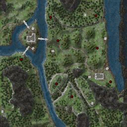

This option allows you to choose this style map set for the Map Pack.
This style map set contains Tekener's 256x256 sized images. The Briefine, Jamtland Mountains, and Pennine Mountains Frontier maps have been modified in this map set to add a "red dot" at the approximate location of the Doppelganger Mobs.
